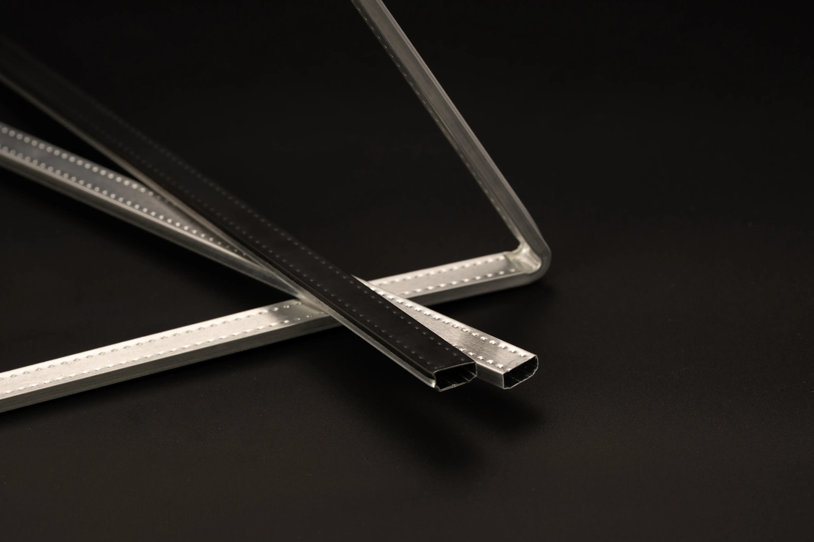

Alüminyum Isıcam Profilleri
Salt Profil ile ürettiğimiz yüksek kalite ısıcam profilleri indüksiyon kaynağı ile birleştirilir ve çeşitli ölçülerde üretilir.



Salt Profil ile ürettiğimiz yüksek kalite ısıcam profilleri indüksiyon kaynağı ile birleştirilir ve çeşitli ölçülerde üretilir.
Yenilikçi çözümlerimizin farklı sektörlerde iş akışlarını nasıl geliştirdiğini keşfedin.
A comprehensive overview of our flagship product line and its key features.
Explore our most popular products designed to meet the highest industry standards.

Flagship industrial processor with advanced automation and energy-efficient design.

Centralized control system with intuitive interface and seamless integration.
High-precision monitoring system with real-time analytics and predictive maintenance.
Compact and rugged data logging device with extended memory and wireless capabilities.
Rakiplerimizden ayrışmamızı sağlayan avantajlarımızı keşfedin.
Yüksek kaliteli alüminyum ve titiz üretim süreçleriyle uzun ömürlü ve dayanıklı profil sistemleri.
Isı yalıtımı sağlayan tasarımıyla enerji tasarrufuna katkı sağlar, ısı kayıplarını minimuma indirir.
Kurulumdan sonraki süreçlerde de teknik destek ekibimiz her zaman yanınızda.
Geri dönüştürülebilir malzeme kullanımı ve doğaya duyarlı üretim anlayışı.
Mevcut pencere ve cephe sistemlerine sorunsuz entegre edilebilir, montaj kolaylığı sağlar.
Yenilikçi çözümlerimiz, sektör standartlarının ötesinde performans sunar ve gelecekteki ihtiyaçlara da cevap verir.
Get comprehensive information about our complete product line, technical specifications, and pricing in our latest catalogue.